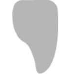
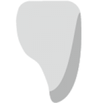

Deprag NOVA Esthetics
NOVA are lithium disilicate glass-ceramic blocks for CAD/CAM technology. The innovative block technology gives the material excellent homogeneity.
The blocks are in an intermediate crystalline state, which allows them to be easily milled on CAD/CAM equipment. The unusual color of the blocks from gray to purple and beige is associated with the composition and microstructure of glass ceramics.
After milling, the material is crystallized in a special ceramic kiln (eg Deprag P7). The crystallization process is easy to carry out and takes approximately 10 minutes.
NOVA blocks display natural brightness. And the translucency and variety of shades allow you to make restorations in full anatomical volume from this glass-ceramic without any problems.
-

Front crowns
-

Veneers
Specifications
| General characteristics | |
|---|---|
| Durability | 400 mPa |
| Translucency | |
| Dimensions | C14 |
| Color | HT: HT-OM1, HT-OM2 MT: MT-OM1, MT-OM2 LT: LT-OM2, LT-OM3 |
| Sintering temperature | 827℃/850℃ |
| Crowns | |
| Natural Anterior Crowns | |
| Whitening effect anterior crowns | |
| Observer crowns | |
| Tabs and Overlays | |
| Вкладки | |
| Накладки | |
| Veneers | |
| Natural Color | |
| Washed out (opaque/opaque) | |
| Washed out (high aesthetic/transparent) | Valid |
| Ultra Slim | Allowed (0.3 - 1mm) |
| Bridges | |
| Natural color front bridge | |
| Washed Front Bridge | Valid |
| Gum Bridge | |